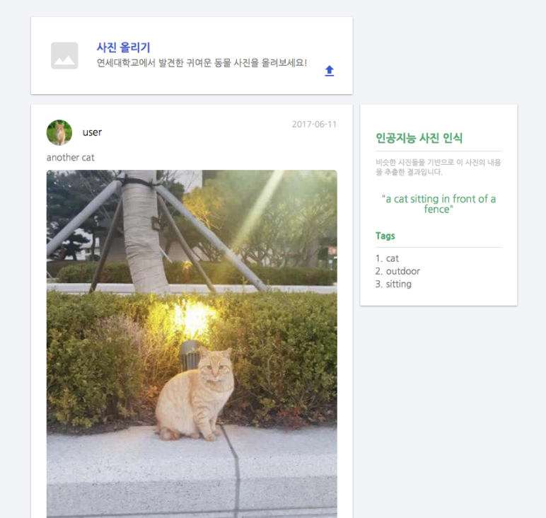
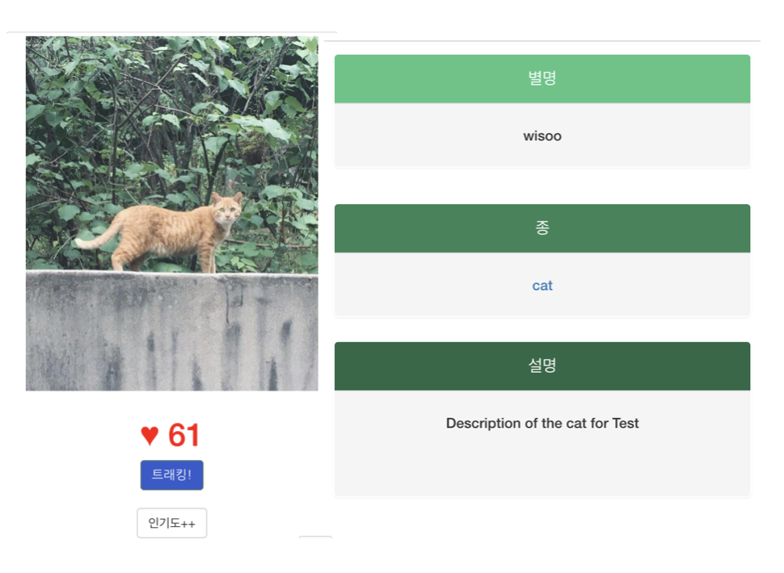
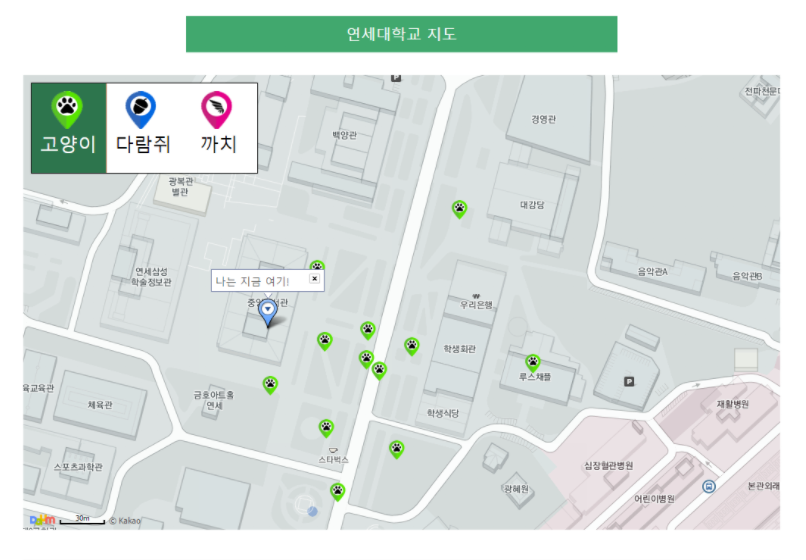
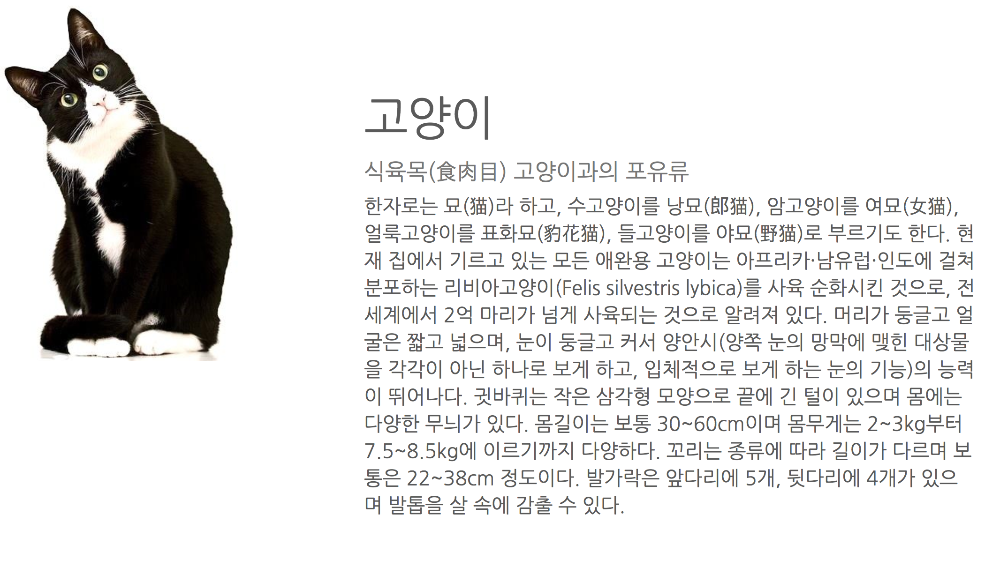

뉴스피드 DB의 입력공간
Yonsei WILDCAMP에 원하는 자료를 업데이트할 수 있습니다. 동물들의 사진과 현재위치, 사람들의 코멘트가 이에 해당됩니다. 또한, Microsoft Azure Computer Vision API을 이용해, 사진을 자동으로 인식하기도 합니다.

Y생태계 모든 DB의 집약체
연세대 내 동물들의 프로필을 이곳에서 확인할 수 있습니다. 개체별로 각 페이지가 만들어지며, 그에 대한 사진DB, 위치DB, 사람들의 코멘트가 보여집니다.

Y지도 Daum Map 사용
동물들의 행적를 확인하고, Sendbird위젯을 통해 익명으로 채팅할 수도 있습니다. 각 동물을 다른 아이콘을 이용해서 지도 위에 행적을 나타냅니다. 지도는 연세대학교와 그 근처로 한정됩니다.

동물백과사전 정보의 모음
연세대 내 동물들 개체의 정보가 실립니다. 이곳에서 그 동물에 대한 일반적인 정보가 게재됩니다.
